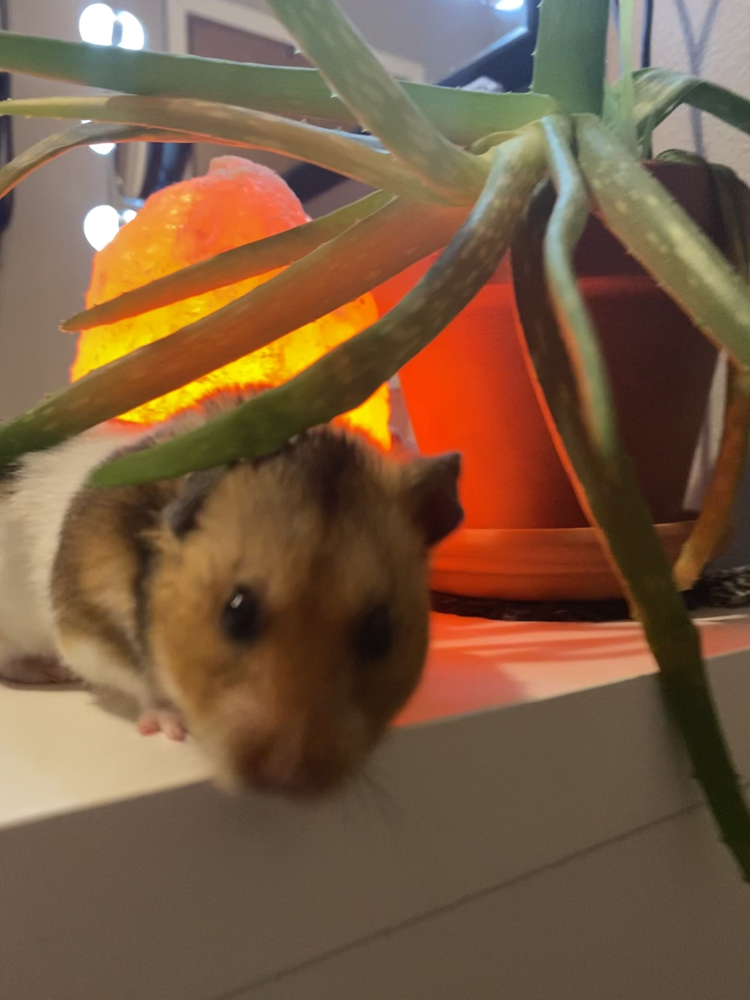
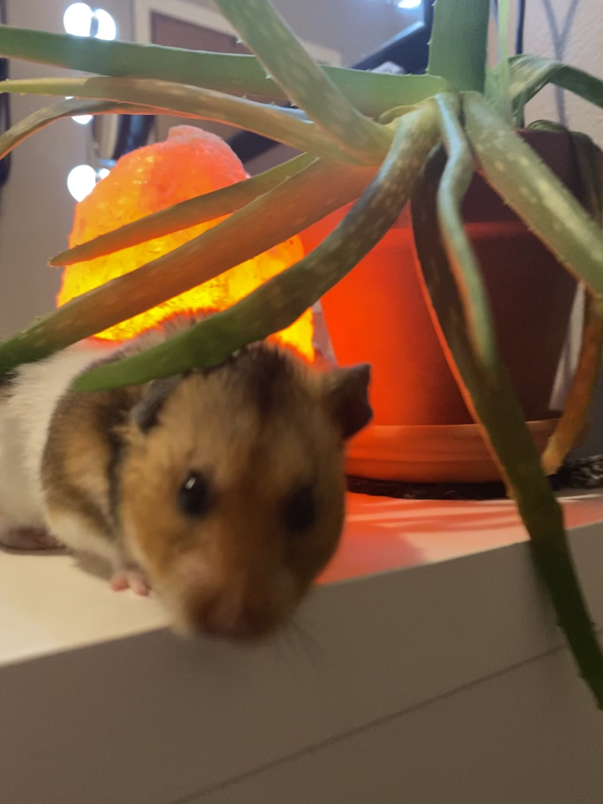
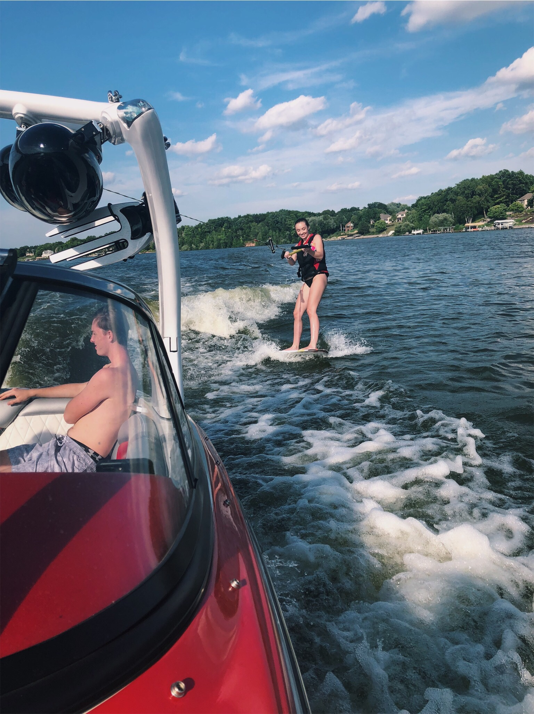

I am from Green Bay Wisconsin, so I am a Packers fan of course. I have two extremely supportive parents that mean the world to me, an older brother and a hamster. I am also extremely lucky to be so close with my grandparents who only live a few minutes away from my house in Green Bay. I'm lucky to have such a great family and lean on their support on a daily basis.

 

I love trying new foods and am always on the hunt for local restaurants. During summertime, I love being out on the water. Whether that be boating, sitting near the water, or swimming, I love the outdoors. I try to spend time in nature at least once a day, even if it's just a twenty-minute walk! I also love shopping, traveling and spending time with friends/family. Other than that, I love attending Packer games and the game-day energy that Green Bay encompasses.
A big goal of mine is to spend a year in another country. I love traveling, so whether that be for work, leisure, or a mixture of the two, I would love to accomplish that within my lifetime. Regarding work, a goal of mine is to stay employed with a company for multiple years. I intend to find a company with good values that appreciates my work and allows me to flourish. Ultimately, the biggest goal is just to be happy and enjoy what I do.